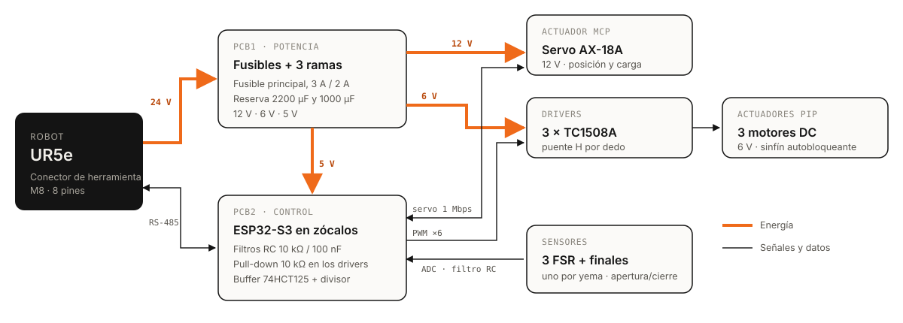
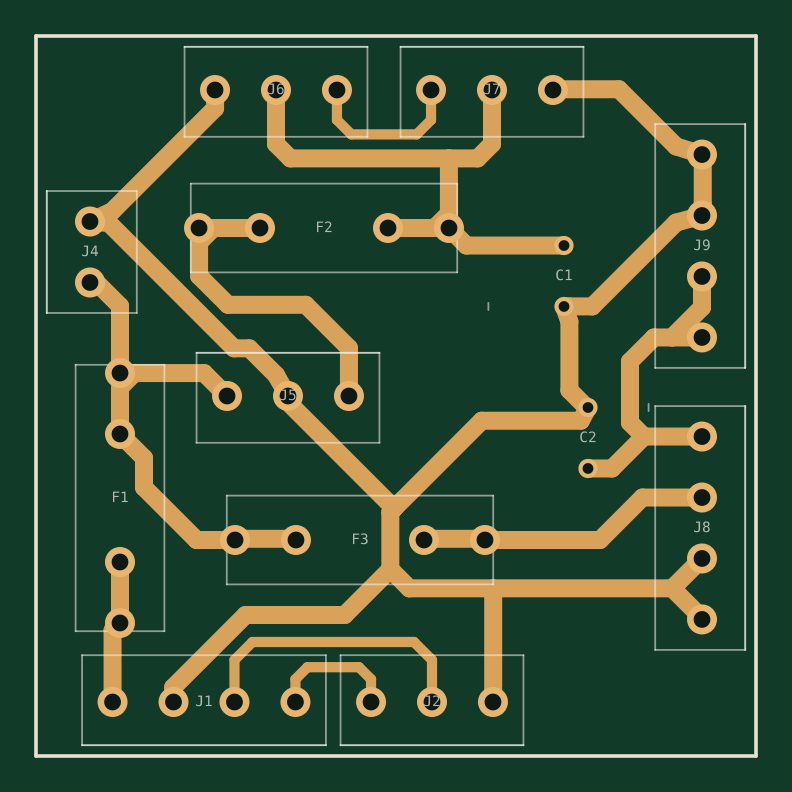

Tres ramas desde 24 V
Fusibles dedicados y tres ramas: 12 V para el servo, 6 V para los motores y 5 V para la lógica.
● Universidad EAFIT · 2026 · Grupo 1
Mueve tres dedos, mide la fuerza de agarre y se comunica con el robot usando solo los 24 V del puerto de herramienta del UR5e.
 Render · ensamble V31
Render · ensamble V31
01 El reto
Diseñar un gripper que mueva tres dedos, mida la fuerza de agarre y se comunique con el robot usando solo los 24 V del puerto de herramienta.
02 Objetivo
Integrar potencia, control y comunicaciones en tarjetas compactas, seguras y fabricables a una sola cara, sobre una mecánica impresa en 3D que sostiene la pieza sin consumir energía.
3 motores DC con drivers TC1508A, uno por articulación PIP.
1 servo AX-18A con retroalimentación de posición y carga.
3 sensores de fuerza FSR y finales de carrera.
Enlace RS-485 con el controlador del UR5e.
03 Visor 3D
Modelo exportado directamente del CAD de SolidWorks. Gira con el mouse, acerca con la rueda, separa las piezas con la vista explosionada y toca cualquier pieza para ver qué es.
Cargando ensamble V31 · 10 MB
04 Arquitectura del sistema
Los 24 V del UR5e entran a la tarjeta de potencia, que los reparte en tres ramas protegidas. La tarjeta de control lee los sensores, mueve los actuadores y habla con el robot por RS-485.
Fusibles dedicados y tres ramas: 12 V para el servo, 6 V para los motores y 5 V para la lógica.
Maneja los drivers, lee los sensores con filtros RC y se comunica con el robot.
Servo Dynamixel AX-18A a 12 V y 3 motores DC a 6 V, controlados con drivers TC1508A.
3 FSR y finales de carrera. RS-485 con el UR5e y bus del servo a 1 Mbps.

05 Proceso de diseño
Función global: agarrar.
Subfunciones del sistema.
8 alternativas generadas.
Pugh y matriz ponderada.
Pautas de seguridad y FMECA.
2 PCB listas para fabricar.
06 Diseño mecánico
Todas las transmisiones terminan en un sinfín. Los sinfines son autobloqueantes: una vez cerrado el agarre, los motores pueden apagarse y la pieza no se suelta.
El AX-18A mueve un piñón 21T que engrana con tres piñones 28T con sinfín, uno por dedo. Los tres dedos cierran juntos y el eje MCP es una varilla M3×74.
Cada dedo lleva su motor Pololu con un sinfín que mueve una corona 14T pegada a la falange distal, que gira sobre un buje LM3UU.
Las yemas son de TPU 95A, blandas para mejorar el agarre, y se sujetan a las falanges con 24 imanes N52 Ø6×3. Cada yema aloja un sensor FSR.
El torque del AX-18A se limita al 50–60 % (registro 34). Con el ensamble actual los dedos se tocan en el centro a MCP ≈ +20°, así que ese límite también se fija por software.
07 Materiales y manufactura
PLA para la estructura y los engranajes, rígido y preciso; TPU 95A para las yemas. Ejes sobre rodamientos MF63ZZ y bujes LM3UU, tornillería M3. Antes de imprimir se valida una galga de ajustes de 32 minutos.
| Placa | Contenido | Material | Tiempo | Peso | Pausas |
|---|---|---|---|---|---|
| 0 | Galga de ajustes (agujeros de rodamientos, insertos, imanes, ejes) | PLA | 0 h 32 | 10 g | — |
| A | Palma, 3 piñones 28T con sinfín, piñón 21T, acople motor–engranaje, 3 coronas 14T y 3 sinfines PIP | PLA | 9 h 31 | 188 g | — |
| B | Acople UR5e | PLA | 4 h 11 | 127 g | — |
| C | Tapa Dynamixel, 3 falanges proximales, 3 distales y 3 tapas de motor | PLA | 5 h 22 | 105 g | Z 13,4 y 14,8 · imanes |
| D | 3 yemas proximales y 3 distales | TPU 95A | 0 h 52 | 16 g | Z 4,8 y 5,8 · imanes |
| Total | ≈ 20 h 30 | 430 g PLA + 16 g TPU | 24 imanes |
4 paredes, gyroid 40 %, sin soportes. Los dientes salen más finos y resistentes.
Gyroid 40 %, porque lleva toda la carga del brazo.
M3 Ø3,3–3,4, MF63ZZ Ø6,1, LM3UU Ø7,1, inserto Ø4,0, imán Ø6,15 × 3,1; encogimiento del PLA compensado al 99,8 %.
08 Electrónica
Ramas separadas por fusible, con reserva de 2200 µF y 1000 µF. Tarjetas a una sola cara, pistas a 45° y conectores JST XH para cambiar módulos sin soldar.
Fusible principal y fusibles de 3 A / 2 A por rama.
Rama dedicada con reserva de capacitancia.
Drivers TC1508A, uno por dedo.
ESP32-S3; el USB queda separado para programar.


Resistencias de 10 kΩ a GND mantienen los motores apagados mientras arranca el ESP32, y cada FSR pasa por un filtro RC de 10 kΩ / 100 nF.
Half-duplex por un solo cable con protocolo Dynamixel: buffer 74HCT125 de 3,3 V a 5 V y divisor que protege al ESP32. Se eliminó el shield intermedio.
Un FSR por yema hacia el ADC del ESP32, finales de carrera de apertura y cierre, y la posición, carga y temperatura que reporta el servo.
09 Programa de control
El ESP32-S3 recibe órdenes de texto por UART a 115200 baudios (8N1), controla los tres motores con PWM a 20 kHz y el servo, y envía telemetría a un servidor de la universidad. Si no llega una orden válida en 500 ms, detiene todo.
| Orden | Qué hace |
|---|---|
OPEN n · CLOSE n | Abre o cierra la instancia n: 1–3 son los motores de los dedos y 4 el servo. |
STOP n · STOP | Detiene una instancia o todo el gripper. |
M n pwm · ALL a b c | PWM de −100 a +100 % en un motor o en los tres. |
SERVO µs | Pulso del servo; 0 lo deshabilita. |
STATUS · PING | Lee las consignas o renueva la orden activa. |
Una orden inválida también detiene los motores y quita la señal del servo.
Cada evento y una muestra cada 500 ms se envían por Wi-Fi en JSON, con cola de 64 eventos.
10 Interfaz con el UR5e
El acople impreso sigue la brida de herramienta del UR5e. La energía y los datos salen del conector de herramienta, así que el gripper no necesita cables externos.
| Parámetro del UR5e | Valor | Uso en el gripper |
|---|---|---|
| Carga útil | 5 kg | Límite de masa de gripper más pieza. |
| Brida de herramienta | EN ISO 9409-1-50-4-M6 | Acople UR5e impreso con tornillos M6. |
| Alimentación de herramienta | 12 / 24 V · 1,5 A (dos pines) · 1 A (un pin) | Única fuente: 24 V a la PCB1. |
| Conector | M8 de 8 pines | Energía y enlace RS-485 por el mismo cable. |
| Alcance · repetibilidad | 850 mm · ± 0,03 mm | Espacio de trabajo del agarre. |
Fuente: Universal Robots, UR5e Technical Specification (2023).
11 Análisis de ingeniería
Estática en tres vistas, cinemática, dinámica y consumo, validados en Working Model 2D con un error máximo de 0,034 % en 180 configuraciones.
Fuerzas de contacto, torques en MCP y PIP y reacciones, para 4 kg (μ 0,5) y 3,5 kg (μ 0,3).
Abrir análisis →
3.3Cierre cicloidal, velocidades y aceleraciones de las falanges y trayectorias de P, D y T.
Abrir análisis →
3.4Lagrange para el dedo de dos eslabones, potencia, energía por ciclo y consumo eléctrico.
Abrir análisis →
WM 2DBarrido de 180 configuraciones en Working Model 2D frente al cálculo analítico.
Abrir validación →
PDFInforme mecánico en formato EAFIT, con los dos casos de diseño.
Descargar →
AVANCE 3Arquitectura, alimentación y tarjeta de la entrega anterior.
Ver →
12 Equipo
Bibliografía